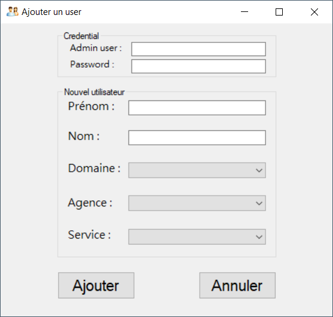

Mon stage en tant que devops
- Entreprise : Com & Company
- Lieu : Lyon
- Date: 26 Octobre au 18 Décembre 2020
- Service : Service Infrastructure
Contexte
L'entreprise
J’ai effectué ce stage dans l’entreprise Com & Company associée au groupe Valeur et Capital (groupe dont le cœur de métier réside dans la vente d’immobilier neuf et de placements financiers (patrimoine immobilier)). Le groupe Valeur et Capital exerce plusieurs métiers comme :
- L’investissement immobilier
- La gestion privée
- Le courtage de crédit
- L’administration de biens immobiliers
- La promotion des biens immobiliers
Ainsi l’entreprise Com & Company accompagne la croissance de chaque entité et développe des outils adaptés à chaque métier du groupe. L’entreprise Com & Company se situe au siège du groupe Valeur et Capital qui est à Lyon (94 Quai Charles de Gaulle).


Parc Informatique

Schéma du parc informatique de Valeur et Capital.
Service
Lors de ce stage j’ai fait partie du service qui s’occupe de l’infrastructure de l’entreprise et de son support informatique. Il est composé d’un responsable et de 5 employés dont un alternant :
Ce service s’occupe principalement du parc informatique de l’entreprise, même celui des autres agences présentes en France. Il s’occupe aussi de répondre à des appels téléphoniques internes et de régler leurs problèmes.
Mon espace de travail
Tout le service infrastructure se situe au 4ème étage et dans une seule pièce. Mon stage s’est effectué à 50% en télétravail, soit un jour sur deux.
Bureaux du service infrastructure depuis mon espace de travail.
J’ai reçu pour travailler un pc portable professionnel le temps de mon stage, et j’avais un accès au contrôleur de domaine afin de l’administrer.
Extérieur (cité international) :

Travail effectué
Pendant ma période de stage j’ai pu produire de nombreuses choses et pu découvrir le monde du travail dans le métier de DevOps qui mélange réseau et développement.
Voici les différentes tâches que j’ai pu effectuer durant mes deux mois de stage :
En terme général j’ai effectué toutes les tâches d’un employé du service infrastructure en apportant en plus ma pate qui est de la programmation.
Je n’ai pas eu au sens propre des missions, je vais juste regrouper par thèmes toutes les tâches que j’ai pu effectuer pendant mes 8 semaines de stage.
Mission – Sécurité

Problématique :
La cybersécurité est un enjeu crucial pour toutes les activités des entreprises aujourd’hui. C’est pourquoi les entreprises doivent obligatoirement mettre en place des politiques de sécurité, implémenter des protections ou encore documenter les procédures. Toutefois seul le pentest permet de connaître les risques concrets avec une réponse immédiate. C’est pourquoi ayant des compétences et notions dans ce domaine j’ai décidé d’effectuer un pentest.
Outils utilisés
- Kali Linux
- Nmap
- Nessus
Réalisation
Pour commencer à pouvoir faire du pentest ou un scan, j’ai préalablement installé Kali Linux sur le VSphere interne de l’entreprise. Une fois l’installation fini, j’ai pu lancer un premier scan à l’aide de NMAP qui est déjà intégré dans Kali. Le scan fini, j’ai généré un rapport de scan qui permet d’identifier les services et ses versions qui tournent derrière les ports ouverts du contrôleur de domaine. Mais pour pousser le scan plus loin j’ai dû utiliser Nessus.
Nessus quant à lui est plus qu’un scanner de ports, c’est un outil de sécurité informatique qui signale les potentielles failles des machines testées. Mais en différence avec Nmap, Nessus n’est pas préalablement installé sur Kali Linux, il faut donc l’installer. Quand on lance un scan avec Nessus, il retourne un rapport détaillé de toutes les failles potentielles du système en question, de la plus à la moins critique.
L’interface de Nessus :

A la fin j’ai présenté le rapport à mon maître de stage, montrant qu’il n’y avait aucune faille critique dans le contrôleur de domaine actuel de l’entreprise.

Mission – Administration Active Directory
Problématique
Lors de mon arrivée dans l’entreprise de nombreuses actions pour administrer l’Active Directory étaient faites à la main. Comme par exemple le fait d’ajouter un nouvel utilisateur dans l’AD. De plus, il n’y avait pas d’interface graphique pour lancer ces scripts.
Outils utilisés
- PowerShell
- Visual Studio
- PowerShell Universal
- Git / Gogs
Réalisation
Tout d’abord ma mission a été de faire un script, codé en PowerShell, qui permettait d’ajouter un nouvel utilisateur dans l’AD. Une fois fini, j’ai dû créer un repos git sur un serveur git local appelé gogs
Après avoir fait cela j’ai dû créer de nombreux autres script PowerShell qui :
- Ajoute une licence à un utilisateur
- Créé un nouveau groupe dans l’AD
- PowerShell Universal
- Déplace les utilisateurs désactivés dans une OU Historique
A chaque fois que je terminais un script je devais le tester sur un AD de test qui était la copie conforme de celui qui était en fonction
Lors de la réalisation de mes scripts, j’ai pensé qu’il était mieux de pouvoir lancer le script pour ajouter un nouvel utilisateur dans l’AD depuis une interface graphique. J’ai donc commencé à coder une application en C# à l’aide de Visual Studio
Voici l’interface de mon application une fois fini :
Pour pouvoir installer cette application j’ai dû ajouter un installeur à ma solution sur Visual Studio
Quand mon application fonctionnait bien et que mon maitre de stage a appréciée l’idée d’avoir une interface graphique pour ce script, il m’a demandé de travailler sur PowerShell Universal. En effet, pour faire cette interface graphique j’ai mis pas mal de temps et sa modification, pour effectuer par exemple des mises à jour, est très complexe. Mais avec PowerShell Universal, lancer un script via une interface graphique n’est plus qu’un jeu d’enfant. Effectivement, PowerShell Universal créer automatiquement une interface graphique en fonction des scripts ajoutés, il suffit donc d’installer PowerShell Universal sur un Windows Server.
La première chose que j’ai dû faire, et de créer un Windows Server 2016 et d’y configurer un service IIS, afin d’héberger PowerShell Universal. Pour cela je me suis aidé de la doc officielle trouvable sur internet.
Configuration site web sur le serveur IIS pour l’hébergement de PowerShell Universal :
Une fois les configurations faites, j’ai pu coder en PowerShell le system de connexion sur l’interface web de PowerShell Universal, afin que seuls les administrateurs du domaine puissent s’y connecter.
Voici le rendu une fois connecté à l’interface web de PowerShell Universal. On peu y voir les différents scripts ajoutés et que l’on peut lancer.
Mission – Automatisation de machine virtuels
Problématique
Lorsque l’on créé une machine virtuelle, il est utile de pouvoir automatiser sa création pour déployer plusieurs machines configurées de la même manière et pouvoir réinstaller une machine virtuelle très facilement.
Outils utilisés
- Packer
- Vagrant
- Visual Studio Code
- VirtualBox/VSphere
Réalisation
Tout d’abord, j’ai dû réaliser la création d’un serveur de réplication MySQL Master-Slave sur VirtualBox avec Packer. Packer est un outil open source qui permet de créer des images de machines à partir d’un fichier source, au format JSON (format que j’ai choisi dans mon cas). Pour pouvoir configurer le Master-Slave, j’ai codé en Bash et inclut ce fichier à Packer. Après avoir créer mon fichier JSON, j’ai pu lancer une commande packer, me retournant une image VirtualBox.
Sur VirtualBox il n’est pas possible de déployer directement une machine virtuelle à l’aide de Packer, car il ne créé qu’une image pour VirtualBox, j’ai donc dû utiliser Vagrant qui permet le déploiement de machines grâce à une image.
Voici un exemple de ce que font des serveurs de réplication Master-Slave MySQL :

Après cela j’ai dû faire pareil pour pouvoir créer et déployer un Windows Server 2016 sur VirtualBox. J’ai donc procédé de la même manière, en créant un nouveau fichier JSON et d’autre fichiers de configuration spécifique à Windows. Puis à l’aide de Vagrant j’ai déployé la machine virtuelle sur VirtualBox.
Une fois que tout fonctionné j’ai dû refaire pareil mais pour VSphere. Il faut donc tout reprendre car la configuration des fichiers Packer ne sont pas les mêmes. Et cette fois-ci l’utilisation de Vagrant n’est pas obligatoire car le déploiement peu se faire directement avec Packer pour VSphere. Pour le Windows Server 2016, je n’ai pas rencontré de problèmes pour le déployé sur VSphere. A l’inverse, il m’a été impossible de déployer le Master-Slave sur VSphere, même avec l’aide de collègues.
Exemple d’utilisation courante de Packer et Vagrant :

Livrables des missions
Pour les différentes taches que j’ai effectuées, j’ai dû rendre certaines docs pour que les autres membres du service infra puissent comprendre ce que j’ai pu faire.
Voici les différentes docs effectuées :
- Doc Ajouter un utilisateur AD
- Doc Création Master-Slave
- Doc Modification de l’installeur de l’application
- Doc Pentesting & Kali Linux
- Doc Installation PowerShell Universal
- Doc Utilisation PowerShell Universal
Bilan
Après un stage de 8 semaines bien riches voici ce que je peu en conclure.